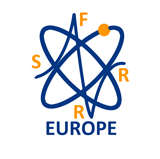
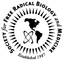
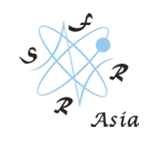
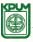

Supporting Societies
The Society for Free Radical Research-Europe (SFRR-E)
The Society for Free Radical Research-Europe (SFRR-E) is dedicated to promoting interest in all aspects of research related to Free Radicals in any scientific field. The frontiers of this exciting area were first charted by an eclectic group of synthetic organic chemists, ESR spectroscopists, radiation chemists and biochemists. Over the last few years, there has been widespread recognition of the important role of free radicals in cellular physiology and in disease. Our society welcomes researchers across of the breadth of these interests.
SFRR-E promotes scientific advancement and education through regular conferences and Summer Schools for scientists to meet, share and challenge the latest concepts in a supportive environment that supports the further development of the field.
Society for Free Radical Biology and Medicine
The Society for Free Radical Biology and Medicine (formerly The Oxygen Society) was established in 1987 in response to a growing recognition of the "dark side" of oxygen as a major issue for the life sciences. The "Oxygen Paradox" tells us that oxygen is both necessary for aerobic life and toxic to all life forms. Free radicals and reactive oxygen and nitrogen species now touch every biological and medical discipline. Efforts to counteract the damage caused by these species are gaining acceptance as a basis for novel therapeutic approaches, and the field of preventive medicine is experiencing an upsurge of interest in medically useful antioxidants and free radical scavengers.
The Society for Free Radical Research-Asia
The Society for Free Radical Research (SFRR Asian) founded in 1995 is an Asian regional branch of the Society for Free Radical Research International. SFRR Asia consists by seven regions - SFRR China, SFRR India, SFRR Japan, SFRR Korea, SFRR Malaysia, SFRR Thailand and SFRR Taiwan (as of Jan.2012). The objective of the Society is to advance knowledge of free radicals and the processes in which they participate with particular reference to those processes of industrial and medical importance, such knowledge being for the benefit of the public.
In furtherance of the above object the Society shall have the following powers:- (a) to provide a forum for discussions; (b) to receive and utilize donations, subscriptions and funds from persons or organizations; (c) to do all lawful things necessary to advance our society's objectives; (d) to undertake research and publish the useful results of the research. Our official journal is Free Radical Research. SFRR Asia holds Meeting every two years in one of our regional countries and the next biennial meeting will be held in Taiwan in 2013.
SFRR Japan

The Society for Free Radical Research-Australasia
The Australasian region has a proud history of free radical research and remains home to some of the world’s leading research groups. We are a multidisciplinary society with expertise ranging from free radical chemistry to biomedical research. SFRR Australasia was formed in 1988, and since that time we have held 19 conferences throughout Australia and New Zealand, including 5 joint meetings with SFRR Japan. The Society provides travel awards to assist young investigators in attending and presenting at these conferences, and for many this provides an opportunity for their first talk on the international stage. We also provide support for our young investigators to attend the biennial meeting of the International Society.
The Biochemical Society
The Biochemical Society is one of the largest learned societies in the biosciences sector. It has more than 5000 members, of whom 29% live abroad and about 7% work in industry. The Society enjoys a more secure financial position than most others in the sector, largely as a result of the success of the Biochemical Journal.
Oxygen Club of California
OCC is a scientific organization dedicated to enhancing interactions and providing meetings and discussion forums worldwide to those interested in free radicals in biological systems, oxidants and antioxidants in biology and medicine, micronutrients, nutrition and health. The OCC seeks to promote scientific interactions to improve the understanding of the roles of micronutrients in oxygen biology and medicine as they pertain to redox and energy metabolism, cell signaling and transcription, and epigenetics. An ultimate goal is to translate these findings to benefit human life- and health-span. OCC sponsors are from industrial organizations, health and medical foundations, government, and academia. We are also cosponsored by the Linus Pauling Institute. With this wide support, conference organizers bring together the world's best researchers to address current scientific issues. The OCC provides a forum -in the form of prizes and awards- for the recognition of scientific achievements by both promising scholars and established investigators.